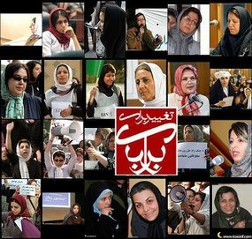
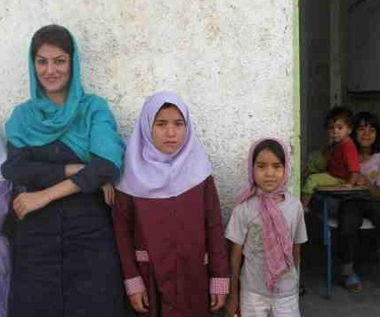
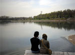

مقالههاى اين بخش
- 29 شهریور 1389
- 29 شهریور 1389
- 29 شهریور 1389
انجمن حمایت از کودکان:
- 28 شهریور 1389
- 25 شهریور 1389
- 23 شهریور 1389
- 23 شهریور 1389
- 21 شهریور 1389
مصاحبه شهرزاد نیوز با مردم در شهرهای مختلف ایران در مورد تسهیل چند همسری, ١٨ شهریور ١٣٨٩
- 20 شهریور 1389
- 16 شهریور 1389
- 16 شهریور 1389
- 15 شهریور 1389
- 14 شهریور 1389

پانتهآ بهرامی
- 11 شهریور 1389
- 11 شهریور 1389
- 10 شهریور 1389

- 9 شهریور 1389

مقاله ميدل ايست آنلاين درباره طلاق در ايران
- 7 شهریور 1389
- 3 شهریور 1389
- 3 شهریور 1389
- 1 شهریور 1389
- 1 شهریور 1389
- 31 مرداد 1389
- 30 مرداد 1389
- 30 مرداد 1389
- 29 مرداد 1389
- 29 مرداد 1389
مینو مرتاضی
- 27 مرداد 1389
- 27 مرداد 1389
- 26 مرداد 1389
| ... | | | | | 660 | | | | | ... |